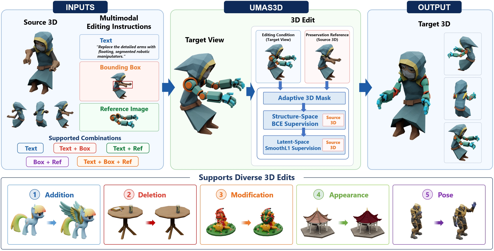

Abstract
3D editing aims to modify existing 3D assets according to user intent while preserving geometric and visual consistency in unaffected regions. Existing methods often rely on task-specific training, source 3D inversion, or predefined 3D editing regions, and lack a unified paradigm for diverse editing conditions. To address this, we propose UMAS3D, a unified 3D editing framework that is training-free, inversion-free, and mask-free. It uniformly handles editing instructions across different modalities, including text, bounding boxes, reference images, and their combinations. Without requiring manual or external 3D masks, UMAS3D dynamically constructs an initial 3D mask online and adaptively refines it during generation. We design a two-stage supervision strategy: using BCE loss to enforce global structural consistency during the structure generation phase, and applying SmoothL1 loss to preserve local geometry and appearance features during the SLAT generation phase, while maintaining generation flexibility driven by the target view. Experimental results demonstrate that UMAS3D supports multiple editing tasks—including addition, deletion, modification, appearance change, and pose adjustment—within a unified framework, accurately achieving target modifications while effectively preserving consistency in non-edited regions.
UMAS3D | Unified Multimodal 3D Editing
Before-and-after results across five editing tasks and diverse instruction combinations. Click on a card to inspect the corresponding multimodal editing instruction.
The website template is borrowed from TRELLIS.